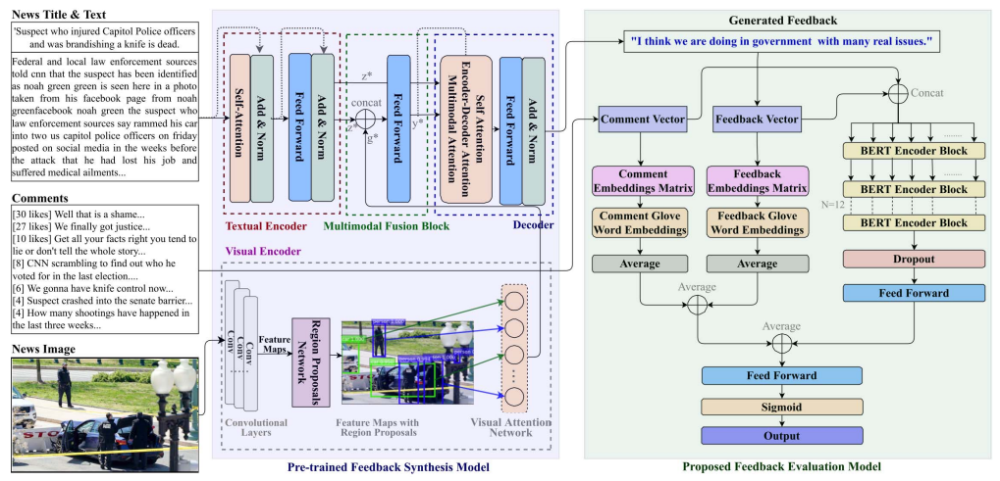

Nidhi Saxena, Kishore Babu Nampalle, Balasubramanian Raman: Semantic segmentation of multispectral images using res-seg-net model, Proceedings of IEEE 14th International Conference on Semantic Computing (ICSC), February 3-5, 2020, San Diego, California, USA. (Published)

Dr. N. Kishore Babu
Researcher
Indian Institute of Technology Roorkee, India.
Research areas: Medical Imaging, Image Processing, Computer Vision, Machine Learning, AI.
Biography
I am a researcher who completed my doctoral studies under the esteemed guidance of Professor Balasubramanian Raman in the Computer Science and Engineering department, IIT Roorkee. My academic prowess has been recognized through a litany of prestigious awards and scholarships, including the Prathibha award in 2006, merit scholarships from the Andhra Pradesh government, and exceptional performance on the EAMCET and GATE tests. My research has garnered widespread recognition and support, including funding from esteemed institutions such as the Ministry of India, DORA IITR, and Microsoft Research. My contributions to the field have been acknowledged through numerous publications in reputable journals and conferences, cementing my position as a trailblazing researcher in the field. In addition to my research achievements, I possess extensive teaching experience and have had the privilege of mentoring numerous graduate and postgraduate students, imparting my knowledge and fostering their academic growth.
About
Education
-
Ph.D., Department of Computer Science and Engineering, IIT Roorkee.
-
M.Tech., Department of Computer Science and Engineering, IIT Roorkee.
Awards and Honors
-
Attended and Presented (Offline) my research paper in 14th IEEE International Conference on Semantic Computing (ICSC 2020), which was held on Feb 3-5, 2020, San Diego, California, USA.
-
Received Microsoft research funds to attend IEEE International Conference.
-
Got US visa with 10 years validity i.e valid upto January 15, 2030.
-
Received Microsoft research funds from IIT Roorkee to attend IEEE International Conference.
-
Received Alumni Funds Funds (Travel Grant) from the Indian Institute of Technology Roorkee to present my Research paper at the International Conference.
-
Received M.H.R.D fellowship from the Govt. of India.
-
Got merit scholarship for securing first rank in Secondary School Examination at district level from Indian Bank.
-
Received the Honorarium from District collector for securing the Highest marks in SSC Public Examination.
-
Awarded a certificate of merit for scoring in the General Knowledge Talent Test.
-
Awarded a certificate for participating in Ethical Hacking as an active participant.
Experience
-
Working as a Faculty in the department of CSE, IIIT Ranchi (08-08-2024 to till date).
-
ASSISTANT PROFESSOR, Department of Computer Science and Engineering, Vignan's Foundation for Science, Technology & Research (Deemed to be University), INDIA (June 2017 – December 2018).
-
TEACHING ASSISTANT, Department of Computer Science and Engineering, Indian Institute of Technology Roorkee (January 2019 - December 2023).
-
REVIEWER, International Conferences (CVIP, ICONIP) and International Journal (Journal of Real-Time Image Processing, Neurocomputing).
Publications


Kishore Babu Nampalle , Raman B.: An efficient approach for skin lesion segmentation using dermoscopic images: A deep learning approach. Proceedings of 5th IAPR International Conference on Computer Vision and Image Processing, December 4-6, 2020, pp. 430–439, Springer. (Published)

Kishore Babu Nampalle , Raman B. An efficient multi-functional deep learning model for effective medical image classification using skin lesion database, Proceedings of IEEE 5th International Conference on Multimedia Information Processing and Retrieval (MIPR), August 2-4, 2022 (pp. 425-429), IEEE. (Published)

Goyal, P., Raj, A., Kumar, P. and Kishore Babu Nampalle, 2022, August. Automatic Evaluation of Machine Generated Feedback For Text and Image Data, Proceedings of IEEE 5th International Conference on Multimedia Information Processing and Retrieval (MIPR), August 2-4, 2022, (pp. 413-418), IEEE. (Published)
Kishore Babu Nampalle, Shriansh Manhas and Balasubramanian Raman, Medical image security and authenticity via dual encryption, Applied Intelligence, Springer, April 2023. (Published)
Kishore Babu Nampalle, Anshul Pundhir, Pushpamanjari Ramesh Jupudi, and Balasubramanian Raman, Towards Improved U-Net for Efficient Skin Lesion Segmentation, Multimedia Tools and Applications, Springer, April 2023. (Published)
Deepak Kumar, Pradeep Singh, Richa, Kishore Babu Nampalle and Balasubramanian Raman, Integrating Physiological Signals with Dynamical Attention Networks for Personality Trait Analysis, International Joint Conference on Neural Network (IJCNN 2024), June 30 - July 5, Yokohama, Japan. (Published)
Kishore Babu Nampalle, Pradeep Singh, Uppala Vivek Narayan, Balasubramanian Raman, Vision Through the Veil: Differential Privacy in Federated Learning for Medical Image Classification, https://doi.org/10.48550/arXiv.2306.17794.
.jpg)
Pradeep Singh, Kishore Babu Nampalle, Uppala Vivek Narayan, Balasubramanian Raman, See Through the Fog: Curriculum Learning with Progressive Occlusion in Medical Imaging, https://doi.org/10.48550/arXiv.2306.15574.
Talk
-
Delivered a talk (Virtually) on ONLINE FRAUDS AND HOW TO AVOID THEM , in National Webinar on Digital Literacy conducted by GOVERNMENT DEGREE COLLEGE, NANDIKOTKUR (Affiliated to Rayalaseema University, Kurnool), Department of Commerce & Department of Computer Applications, Andhra Pradesh, India on 11 Sep 2024.
Visits
- Attended CVIP International conference, MNIT, Jaipur (Rajasthan), India.
- Participated in conducting the Workshop (virtual) on Digital Image Processing and its Applications (DIPA-2020) at NIT Arunachal Pradesh, India.
- Attended (Offline) ICSC international conference, California, San Diego, USA.
- Attended ICTP certification course (Virtually), Italy.
- Attended IEEE International Conference on Image Processing, Abu Dhabi, UAE (Virtual).
National Visits:
International Visits:
Teaching
- Database Management System (DBMS)
- Advanced Database Management System (ADBMS)
- Digital Logic Design (DLD)
- Machine Learning (ML)
- Object Oriented Programming (OOP)
- Programming Languages: C, C++, Java, Python.
- WEB TECHNOLOGY: HTML, XML, JAVASCRIPT
- DATABASE SYSTEM: MySQL, Oracle
- OPERATING SYSTEM: Windows, Linux
- DEEP LEARNING: CUDA, Tensor Flow, Pytorch, and its compatible libraries
Contact
- kishorebabu573(at)gmail.com
- kbabu89(at)cs.iitr.ac.in
- Computer Science and Engineering Department
- Indian Institute of Technology Roorkee, India.